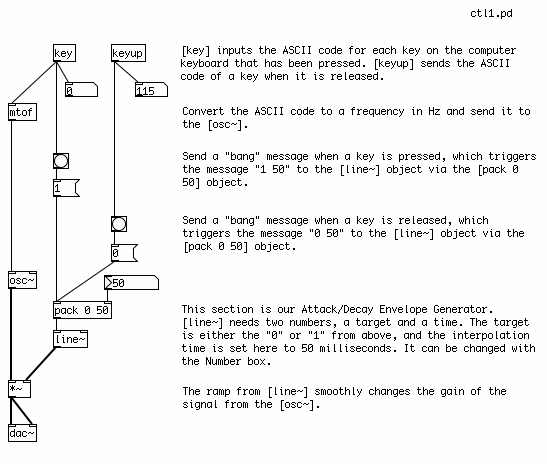
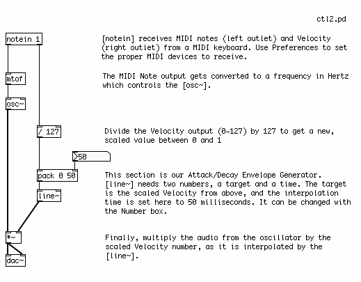

Controlling the Synthesizer
Reviewing what we've covered in this tutorial, we can see that all the building blocks of a simple synthesizer are present.
We have various Oscillators to generate the tones. Then there are Low Frequency Oscillators, which provide the possibility to modulate either the frequency or gain of the Oscillator(s), or the frequency of a Filter. There are also different types of Filters, which emphasizes and/or removes certain frequencies. Envelope Generators control changes in frequency or gain over time, and Amplifiers control the final gain of the synthesizer.
The way each of these elements are put together gives the final definition to the sound and functionality of your synthesizer. And there are an infinite number of was to do this! In the following examples, we'll look at some simple ways to combine the different elements of a basic synthesizer with ways of controlling it, either from the computer keyboard, a MIDI keyboard or a 16 step sequencer which we will build.
Input from the Computer Keyboard
To get a very crude input from the computer keyboard, we can use the objects [key] and [keyup]. Each key on the computer keyboard has what is called an ASCII value, which is a number used to represent that key. [key] outputs this number when a key is pressed, and [keyup] sends this number when a key is released. Like MIDI Notes, these numbers are within the range of 0 to 127. However, the layout of these ASCII values on the computer keyboard is far from musical! But they are a good way to get some immediate input into a patch, and later on [key] and [keyup] can used to trigger different elements of a Pd patch besides musical notes.
In the following patch, the ASCII values of the computer keyboard are treated as MIDI notes and control the frequency and volume of a Sine Wave Oscillator. We will use [line~] as a simple Attack/Decay Envelope Generator here, to make the envelope of the note smooth and to avoid clicks.
When a key is pressed, [key] sends the ASCII value, which becomes a frequency through [mtof] and controls the [osc~]. At the same time, when the key is pressed, the output of [key] is converted to a "bang", which triggers the message "1" to be sent to [pack]. In [pack], this "1" is packed together with "50" to make a message which says "1 50". [line~] interprets the message "0 50" to mean "ramp to 1 in 50 milliseconds". This will smoothly ramp the audio signal from the [osc~] up to full volume.
When a key is released, then [keyup] will send a number out as well. We will convert this to a "bang", which sends the message "0" to [pack]. [pack] then makes the message "0 50" and sends it to [line~], and [line~] will ramp back down to 0 in 50 milliseconds.

Input from a MIDI Keyboard
This task is made simpler (and more musical!) with the addition of a MIDI keyboard. Make sure you have selected the proper MIDI input device in your Preferences (see Configuring Pd for more details). The [notein] object receives the MIDI Note and Velocity information from the MIDI keyboard. Because usually you will want to listen to the first MIDI keyboard you plug in, we give [notein] a creation argument of "1", thus [notein 1] will receive MIDI Notes on MIDI Channel 1. The MIDI Note played will come out the left outlet, and the Velocity (how hard the key is pressed) will come out the right outlet.
The MIDI Note we send to an [mtof], which converts it to a frequency and sends it to the [osc~]. The Velocity we divide by 127 to get a value between 0 and 1. This value gets [pack]ed together with 50, and sent to the [line~] object, which we will use again as an Attack Decay Envelope Generator. [line~] makes a 50 millisecond audio ramp, either to "0" when the MIDI key is released and the Velocity is "0", or to a value between 0 and 1 when the MIDI key is pressed, depending on how hard it has been pressed. [line~] sends an audio ramp to the Audio Multiplier [*~], which smoothly changes the volume of the audio signal form the [osc~].
